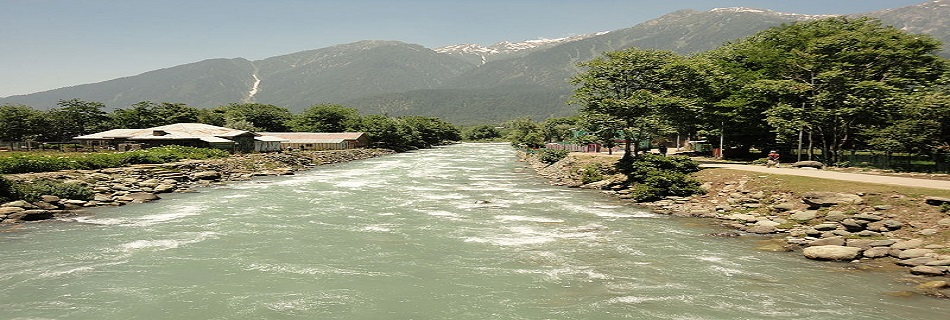
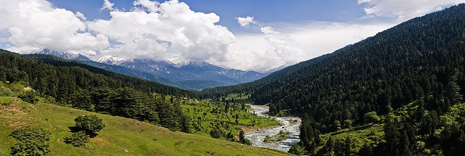
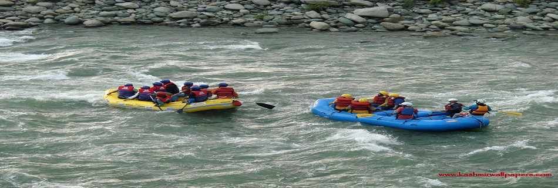
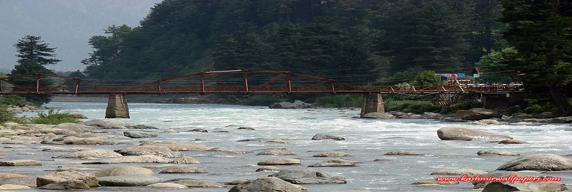

This is an example of a HTML caption with a link.
The Lidder river runs through Pahalgam in a rushing gray-green torrent, foam flecked, breaking in curling waves against the boulders that lie in its path. Its sound is an eternal as the whisper of wind through pine and fir, its force primeval its untamed splendor.
Long before this little village 96 Km east from Srinagar 2400 meters above sea level, became the popular holiday resort it is today, it was the preserve of nomadic shepherds. Its rugged charm has remained un-spoilt by progress, while a bustling main street and its wide range of tented camps, hotels and lodges have established it as a favorite holiday resort.
Pahalgam spreads along the banks of the Lidder, which is the focal point of interest to the angler. The trout fisherman delight, the Lidder is divided into three fishing beats between Mattan and Phalgham, and the trout are so thick that even the first time fisherman can land a good catch.
Pahalgam is perhaps best known as the take off point for trek into the surrounding mountains. The resort is well geared to meet the demands at onward going trekkers and camping equipments is readily available, as are ponies and porters. Walking the Lidder valley is scenically most rewarding, through forests of virgin pine, fording crystal clear mountains streams and through meadows of wild flowers, higher up the valley.
Popular treks from Pahalgam are to the Kolohao Glacier Via Aru, Satlanjan and Dudsar Lake, and to the high altitude lakes, that dot the meadowland and mountain ridges between Pahalgam and Sonmargh.
Cottages in a tourist village, a full fledged club and a large number hotels have come up this beautiful resort pilgrimage to a cave of an 'ice-lingam'.
There is something about the pure and re-vitalizing air of Pahalgam. Perhaps dense pine and cedar forests make it oxygen rich. Limited accessibility combined with limited telecom connectivity make it an ideal getaway from the grind of daily life and professional stress.
The town is at the junction of the Aru and Sheshnag Rivers and surrounded by soaring, fir-covered mountains with bare, snow-capped peaks rising behind them. The Aru flows down from the Kolahoi glacier beyond Lidderwat while the Sheshnag from glaciers along the great Himalayas.
Apart from adventures, Pahalgam is the starting point of the annual Amarnath yatra (holy journey) to the holy cave shrine of Amarnath, which is said to be the abode of Lord Shiva. Every year in the month of July/August, thousands of pilgrims descend on Pahalgam on their way to the holy cave .
Chandanwari at 2,895 m and 16 km (10 miles) from Pahalgam, is the starting point of the Amamath yatra. The road from Pahalgam to Chandanwari is curvy, sometimes a relatively flat terrain, with quite a few steep curves. It can be undertaken by car (not busses and trucks for most part) with some skilled driving. From Chandanwari onwards the track becomes much steeper, being accessible on foot or by pony only. 11 km from Chandanwari is the mountain lake of Sheshnag, after which, 13 km away is the last stop, Panchtarni. A narrow spiralling path from Panchtarni leads to the Amarnath.
We provide the exact information of tourist and places in particular city,how to reach,what we can do over there,suggestions regarding visit at particular places according to month..